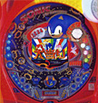

ソニックについて紹介
| 月日 | タイトル | 地域 | ハード |
|---|---|---|---|
| 2月 | 『Sonic Mega Collection』発売 | 欧州 | ゲームキューブ |
| 3月 | 『Sonic Advance2』発売 | 北米 | ゲームボーイアドバンス |
| 3月 | 『Sonic Advance2』発売 | 欧州 | ゲームボーイアドバンス |
| 4月 | アニメ「ソニックX」放送開始 日曜朝8時半、テレビ東京系列より放送開始。 |
||
| 5月 | 『Sonic Pinball Party』発売 | 北米 | ゲームボーイアドバンス |
| 6月 | 『Sonic Adventure DX』発売 | 北米 | ゲームキューブ |
| 6月19日 | 『ソニックアドベンチャーＤＸ』発売 | 日本 | ゲームキューブ |
| 6月 | 『Sonic Adventure DX』発売 | 欧州 | ゲームキューブ |
| 7月17日 | 『ソニックピンボール パーティー』発売 | 日本 | ゲームボーイアドバンス |
| 8月 | 2003年度日経ニューオフィス賞より、「ニューオフィス推進賞」を受賞。 「創意と工夫にあふれ、快適かつ機能的なオフィス」としてソニックチームのオフィスが選ばれ、表彰された。 |
||
| 10月1日 | 開発子会社の1つUGA（ユナイテッド・ゲーム・アーティスツ）より営業譲渡を受け、ソニックチームがさらにパワーアップ！ | ||
| 10月 | 『Sonic Ｎ』発売 | 北米 | ノキアＮ-Gage |
| 10月 | 『Sonic Pinball Party』発売 | 欧州 | ゲームボーイアドバンス |
| 10月 | 『Sonic N』発売 | 欧州 | ノキアＮ-Gage |
| 11月17日 | パチンコ機『ＣＲソニック』登場。 サミー（株）＆フィールズ（株）よりソニックのパチンコ機『ＣＲソニック』が発売。 |
||
| 11月21日 | セガ ワールド ソニックタウン 関オープン。 岐阜県関市にソニックを施設のメインキャラクターにした テーマ＆ライブ型アミューズメント施設「ソニックタウン 関」がオープン。 ゲームに登場する街並みを再現した店内はポップな色合いで彩られ、誰もが楽しめる空間を演出。 |
||
| 12月4日 | 『ソニックバトル』発売 | 日本 | ゲームボーイアドバンス |
| 12月 | 『ソニック・ザ・ヘッジホッグ』最も人気あるゲームに ELSPAとComputer And VideoGamesが共同で調査した、ゲーム業界が始まってから30年間で最も人気のあるゲームの第1位に『ソニック・ザ・ヘッジホッグ（1991年）』が選ばれた。 |
||
| 12月18日 | 『ソニックアドベンチャーＤＸ』発売 | 日本 | パソコン |
| 12月 | 『Sonic Adventure DX』発売 | 北米 | パソコン |
| 12月30日 | 『ソニックヒーローズ』発売 | 日本 | ゲームキューブ プレイステーション2 Xbox |